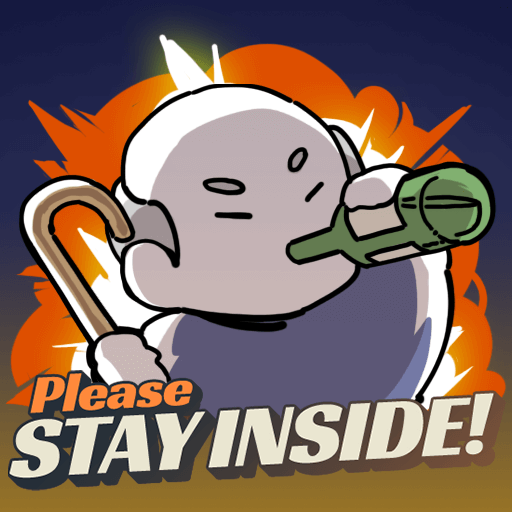

Please STAY INSIDE!
BIC Make Play Jam 3rd_Adventure
Team. 굥욷굥욷

게임 소개
게임 제목: Please STAY INSIDE
팀 이름: 굥욷굥욷
게임장르: 타이쿤
플랫폼: PC/ WEB

게임 플레이 방법
1.~7.
코로나 방역에 힘 써주시는 모든 분께 정말 감사드립니다.
이 페이지 보시는 분들 모두 건강하세요(_ _)

BIC게임잼?
모르는 사람들이 한 공간에 모여 합숙하면서 다같이 시체가 되어가며 ‘일하는 MT’를 하는 것이 게임잼의 원래 모습이었는데, 이번 BIC 게임잼은 코로나 사태로 인해 올해 이례적으로 온라인으로 진행하게 된 행사였다. 오프라인이었으면 다른 팀 방에 난입해서 방해(를 빙자한 놀자판)하기도 하고, 함께 야식을 시켜먹기도 하고, 운영진이 나눠주는 각종 보급품(티, 선풍기부터 야식거리까지), 돌발이벤트까지 즐길 수 있었을 텐데... 온라인이다보니 이사람 저사람 만나며 앞으로 함께 게임업계에 종사할 많은 사람들과 소통할 수 있는 기회는 확실히 줄어 아쉬웠다. 뭔가 정말 재택근무만 하다 끝난 느낌도 들고…
그래도 운영진이 태풍과 코로나 속에 보급상자를 정성스럽게 꾸려서(!) 한사람 한사람 택배를 보내주셔서, 행사 전부터 너무 감사하면서도 굉장한 설렘 속에 참여할 수 있게 된 것 같다. 작업 중에 쿨하게 보내주시는 치킨과 편의점 기프티콘은… 밤샘 속 한줄기 빛…!

에필로그
버스짤 넣기